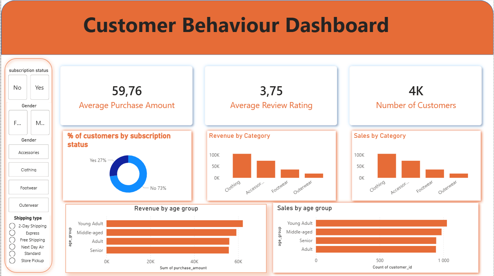

End-to-End Data Analytics Project using Python, PostgreSQL and Power BI
This project analyzes customer shopping behavior using transactional retail data to identify spending patterns, customer segments, and product performance.
The goal is to transform raw data into actionable business insights that can improve marketing strategy, customer retention, and revenue generation.
EDA, cleaning, feature engineering
Business analysis queries
Interactive dashboard visualization
A retail company wants to better understand its customers’ shopping behavior in order to improve sales, customer satisfaction, and long-term loyalty.
Retail dataset containing 3900 purchase transactions.
Handled missing values and standardized columns using Python.
Created age groups and purchase frequency metrics.
Loaded cleaned dataset into PostgreSQL.
Built Power BI dashboard to present insights.
Python and Pandas were used to explore and clean the dataset.
import pandas as pd
df = pd.read_csv("shopping_data.csv")
df["age_group"] = pd.cut(
df["age"],
bins=[18,25,35,45,60,100],
labels=["18-25","26-35","36-45","46-60","60+"]
)
df.fillna(df["review_rating"].median(), inplace=True)
SELECT category, SUM(purchase_amount) AS total_revenue FROM shopping_transactions GROUP BY category ORDER BY total_revenue DESC;
The dashboard allows stakeholders to explore revenue trends, customer segments, and product performance interactively.

All project files are available for download below.